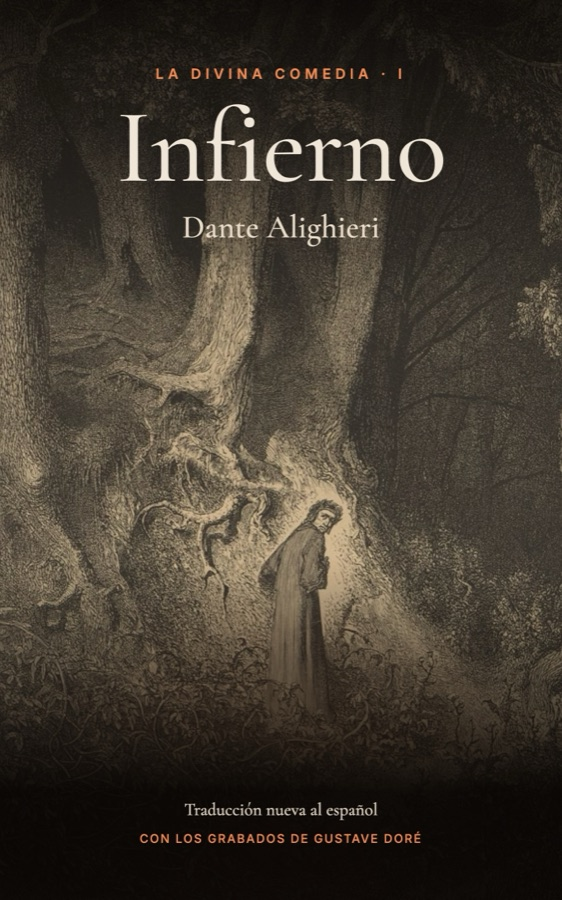
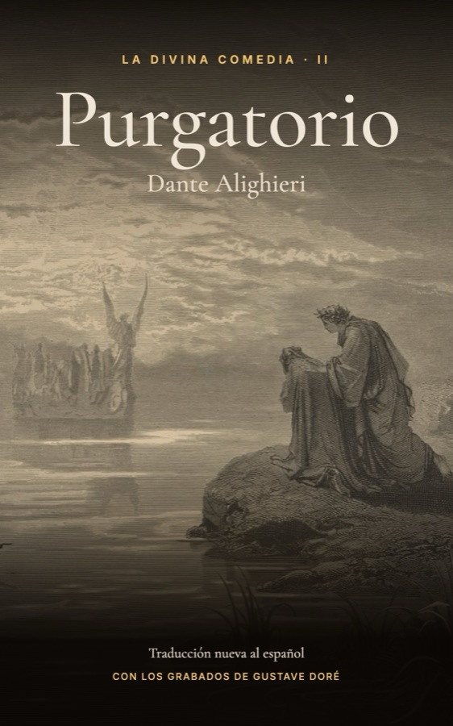
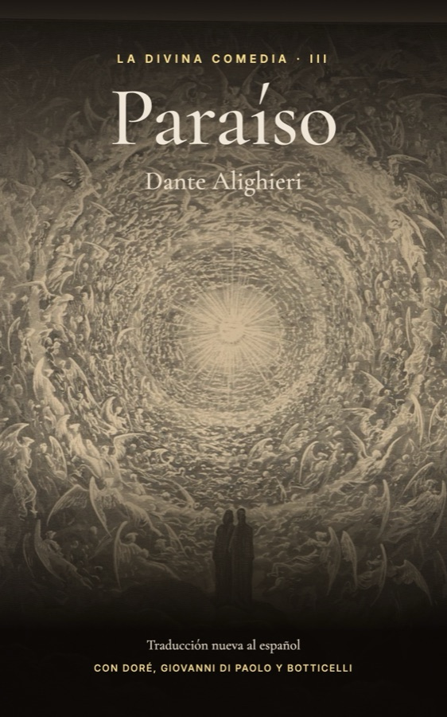

Biblioteca
Clásicos en español para leer y escuchar, gratis.
Dante Alighieri · Traducción nueva al español, verso por verso


Audiolibro: pronto

Audiolibro: pronto
La traducción es nueva y completa, hecha verso por verso desde el texto crítico de Giorgio Petrocchi. La tradujo y revisó Claude, la inteligencia artificial de Anthropic. Cada libro trae notas opcionales al final de cada canto.
Las ilustraciones son de dominio público: los grabados de Gustave Doré y, en los cantos que él no ilustró, obras de Giovanni di Paolo, Sandro Botticelli, John Flaxman, William Blake y otros artistas antiguos, tomadas de Wikimedia Commons.
Los EPUB se abren en Apple Books, Google Play Libros, Kobo o en Kindle con «Send to Kindle».